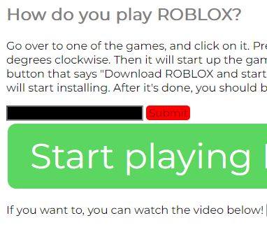
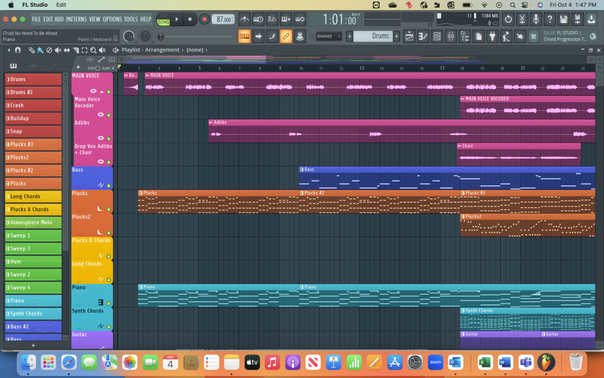
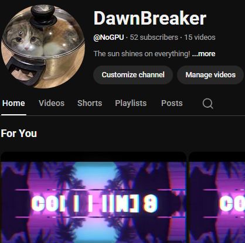

Gallery
Seeking examples of my processes? Look no further.
Some cool photos.
-
First Website

My first ever published website. Check it out; it demonstrates my aptitude for webdev since my early ages.
-
Music Production

My latest track timeline and progress. Ready to be used as OST for your project.
-
Favorite Quote

A screenshot of my current channel. Click the image to see my videos.